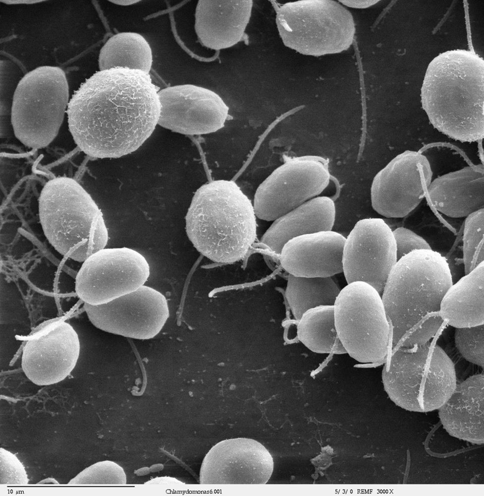

🩺 בוקר טוב רפואה
פרס נובל לרפואה: מתג של אור לתאי העצב
5 באוקטובר 2026 ממהדורה 1 · 8 באוקטובר 2026
ב־5 באוקטובר 2026 הוכרז שפרס נובל לפיזיולוגיה או לרפואה יחולק בין שלושה חוקרים: פטר הגמן וגאורג נאגל מגרמניה, וקרל דייסרות מארצות הברית.
הסיפור התחיל בסקרנות. הגמן רצה להבין איך אצה זעירה, שבנויה מתא אחד בלבד, יודעת לשחות לכיוון האור. הוא ונאגל גילו באצה חלבון מיוחד: כשאור כחול פוגע בו, נפתחת בו תעלה ונוצר בתא אות חשמלי קטן. דייסרות הכניס את החלבון לתאי עצב, וכך אפשר ״להדליק״ תא עצב בעזרת אור.
השיטה נקראת אופטוגנטיקה. בזכותה חוקרים וחוקרות מגלים אילו רשתות של תאי עצב במוח קשורות לזיכרונות, לרגשות ולהתנהגות. היום מנסים להשתמש בה גם כדי להחזיר ראייה לאנשים עם לקות ראייה. שאלה סקרנית על אצה קטנה הובילה לגילוי גדול.
▶ לצפייה בסרטון ״“We can get a whole new understanding of the function of the brain.” Medicine prize 2026״ · ערוץ: Nobel Prize · אנגלית · 5:05
💬 לחשוב ולשוחח: הגילוי התחיל משאלה פשוטה על אצה. על איזו תופעה בטבע אתם ואתן סקרנים לדעת יותר?
מקורות וקרדיטים
📰 מקורות המידע
- Press release: Nobel Prize in Physiology or Medicine 2026 · NobelPrize.org (5 באוקטובר 2026)
- The 2026 Nobel Prize in Physiology or Medicine to Peter Hegemann, Georg Nagel and Karl Deisseroth · Karolinska Institutet (5 באוקטובר 2026)
📖 להעמיק ולקרוא עוד
- אופטוגנטיקה · ויקיפדיה
- Popular information: הסבר פשוט על הפרס (אנגלית) · NobelPrize.org
תמונה: Dartmouth Electron Microscope Facility, Dartmouth College · רישיון: Public domain · מקור התמונה
הידיעה נכתבה במילים שלנו על סמך המקורות.